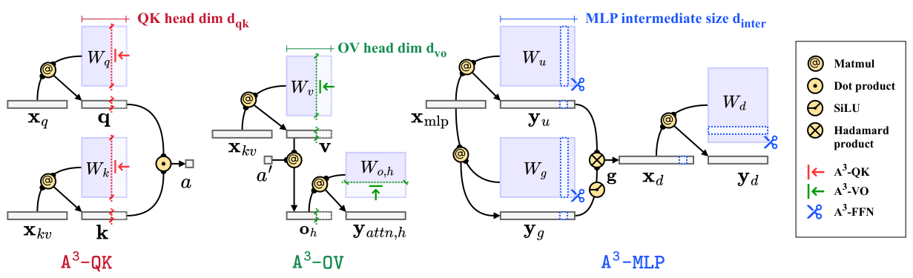
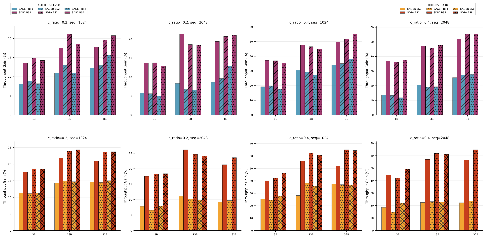
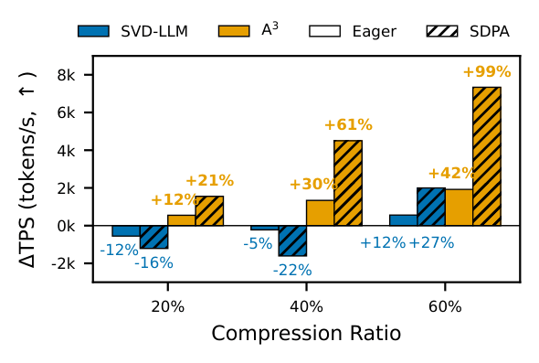
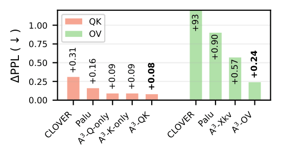
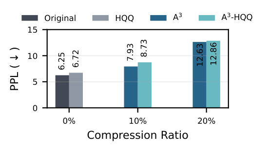
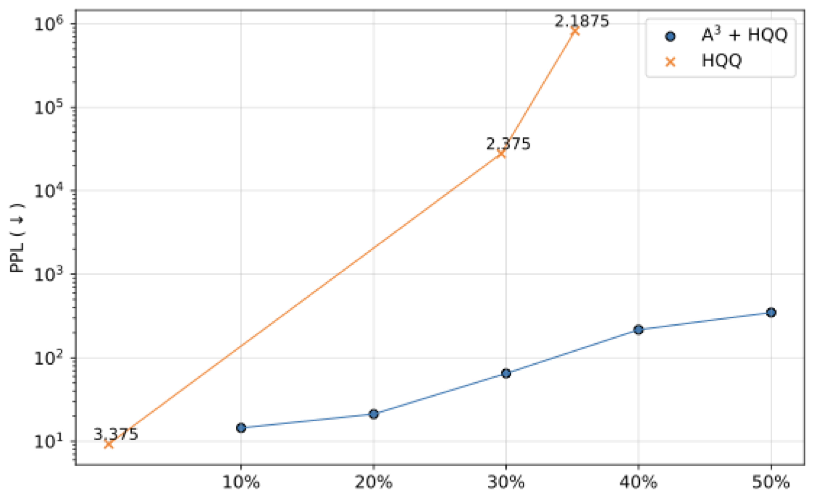

Large language models have demonstrated remarkable performance; however, their massive
parameter counts make deployment highly expensive. Low-rank approximation offers a
promising compression solution, yet existing approaches have two main limitations:
(1) They focus on minimizing the output error of individual linear layers,
without considering the architectural characteristics of Transformers, and
(2) they decompose a large weight matrix into two small low-rank matrices, introducing
runtime overhead such as extra GEMM kernel launches.
To address these limitations, we propose A3, a post-training
low-rank approximation framework. A3 splits a Transformer layer into three
functional components—QK,
OV,
MLP—and provides
analytical solutions that reduce the hidden dimension inside each
component while minimizing the component's functional loss. This directly reduces model
sizes, KV cache sizes, and FLOPs without introducing any runtime overhead.
Through extensive experiments, we show that A3 maintains superior performance
compared to SoTAs. For example, our low-rank approximated LLaMA 3.1-70B achieves a
perplexity of 4.69 on WikiText-2, outperforming the previous SoTA's
7.87 by 3.18.
Key Result: Under the same reduction budget in computation and memory,
A3 on LLaMA 3.1-70B achieves WikiText-2 perplexity of
4.69 vs. previous SoTA's 7.87 — a 58.6% reduction in perplexity error.
Method Overview
Most prior low-rank methods target individual linear layers, optimizing weight
reconstruction without regard to the Transformer's functional structure. A3
instead decomposes each Transformer layer into three components and derives closed-form
optimal solutions for each:
QKA3-QK: minimizes pre-softmax attention score error by
reducing the query/key head dimension.
OVA3-OV: minimizes per-head attention output error by
reducing the value/output head dimension.
MLPA3-MLP: minimizes MLP output error via CUR decomposition,
reducing the intermediate size.

Overview of A3. A Transformer layer is decomposed into
three components: QK,
OV, and
MLP. For each component, A3 derives
an analytical solution that reduces the hidden dimension (head dimension or intermediate
size) while minimizing the component's functional loss. This results in reduced model
size, KV cache, and FLOPs with no runtime overhead—unlike classical low-rank methods
that introduce extra GEMM operations.
QKA3-QKQuery-Key Attention Score Approximation
Objective. For each head, the pre-softmax attention score is
\( A_i = X_q W_{qk,i} X_{kv}^T \). We seek a rank-\(r\) approximation
\(\widetilde{W}_{qk,i}\) minimising the score error:
This is equivalent to minimising
\(\| R_{xx,q}^{1/2}(W_{qk,i}-\widetilde{W}_{qk,i})R_{xx,kv}^{1/2} \|_F^2\),
where \(R_{xx,q} = \tfrac{1}{l_q}X_q^T X_q\) and
\(R_{xx,kv} = \tfrac{1}{l_{kv}}X_{kv}^T X_{kv}\) are the activation autocorrelation matrices.
The query and key weights are then assigned as two separate projections with the
new (smaller) head dimension \(r < d_{qk}\), reducing both model size and KV-cache
without any extra GEMM at inference.
Objective. The attention output of head \(i\) is
\(O_i = P_i W_{vo,i}\), where \(P_i = A'_i X_{kv}\) is the post-softmax context matrix.
We minimise the per-head output error:
Value and output weights are assigned with a new head dimension
\(r < d_{vo}\). Treating each head independently upper-bounds the total attention
output error and admits a simple parallel implementation.
MLPA3-MLPMLP Intermediate-Size Reduction
Objective. The non-linear activation in MLP prevents direct SVD.
Instead, we find a diagonal selection matrix
\(U = \operatorname{diag}(u_1,\dots,u_{d_{\text{inter}}})\)
that keeps the \(r\) most important intermediate neurons:
where \(r_i\) is the \(i\)-th column of \(R_{xx,d}^{1/2}\) and \(w_i\) the
\(i\)-th row of \(W_{\text{down}}\). Keep the top-\(r\) indices; the corresponding
rows/columns of \(W_{\text{down}}\), \(W_{\text{up}}\), and \(W_{\text{gate}}\)
are retained, directly reducing \(d_{\text{inter}}\) to \(r\) with no extra GEMM.
A3 supports vanilla MHA, MHA with RoPE (via CUR approximation that respects
RoPE frequency pairing), and GQA (via joint SVD across query heads sharing a key head),
making it applicable to most modern LLMs. In this work, we report LLaMA-2/3, Phi-3, and MPT family.
Experiments
We evaluate A3 on a range of LLM architectures: MHA-NoPE (MPT),
MHA-RoPE (LLaMA 1&2), and GQA-RoPE (LLaMA 3.1, Phi 3). Tasks span
pretraining perplexity (WikiText-2, C4, SlimPajama) and KV cache compression. All results are post-training
without fine-tuning.
Main Results: Perplexity
Perplexity (↓) on WikiText-2, C4, and SlimPajama at 10% and 20% compression ratios.
Bold indicates the best result per setting. A3 outperforms SVD-LLM
by a large margin across all models and benchmarks. The gap is especially pronounced on
GQA-RoPE models (LLaMA 3.1), where existing methods struggle.
Model
Method
10% Compression
20% Compression
WikiText-2
C4
SlimPajama
WikiText-2
C4
SlimPajama
LLaMA-2-7B MHA-RoPE
SVD-LLM
8.78
11.73
9.49
11.58
14.91
11.93
A3 (ours)
5.96
8.34
6.68
7.22
9.91
7.91
LLaMA-2-13B MHA-RoPE
SVD-LLM
7.09
9.98
7.95
9.03
12.35
9.75
A3 (ours)
5.32
7.65
7.65
6.24
8.99
7.15
LLaMA-3.1-8B GQA-RoPE
SVD-LLM
19.12
19.37
15.14
42.28
33.60
27.44
A3 (ours)
7.93
12.56
9.52
11.36
17.87
13.58
LLaMA-3.1-70B GQA-RoPE
SVD-LLM
7.87
11.30
8.43
9.75
13.77
10.44
A3 (ours)
4.69
8.83
6.59
8.32
13.94
10.02
Phi-3-medium-14B GQA-RoPE
SVD-LLM
6.81
10.47
8.40
8.14
11.90
9.67
A3 (ours)
5.44
9.48
7.28
6.40
10.59
8.16
LLaMA-2-7b MHA-RoPE
—
Original
0.4829
0.7777
0.7498
0.1387
0.4582
0.5158
10%
SVD-LLM
0.3882
0.6749
0.6803
0.0129
0.3477
0.4166
A3 (ours)
0.4761
0.7330
0.7435
0.1130
0.4398
0.4960
20%
SVD-LLM
0.3139
0.6602
0.6464
0.0045
0.3119
0.3837
A3 (ours)
0.4369
0.7174
0.7072
0.0751
0.3979
0.4621
LLaMA-2-13b MHA-RoPE
—
Original
0.5538
0.8086
0.7711
0.2343
0.5513
0.5774
10%
SVD-LLM
0.4206
0.8061
0.7308
0.0902
0.4772
0.5000
A3 (ours)
0.5213
0.7865
0.7743
0.1971
0.5324
0.5560
20%
SVD-LLM
0.3472
0.7877
0.6898
0.0379
0.4318
0.4546
A3 (ours)
0.4727
0.7654
0.7364
0.1645
0.4804
0.5180
LLaMA-3.1-8B GQA-RoPE
—
Original
0.5401
0.8190
0.7822
0.4920
0.6535
0.6484
10%
SVD-LLM
0.3575
0.7458
0.7111
0.0447
0.4708
0.4603
A3 (ours)
0.4565
0.7884
0.7072
0.2388
0.5922
0.5500
20%
SVD-LLM
0.2534
0.6948
0.6440
0.0113
0.3604
0.3880
A3 (ours)
0.3345
0.6823
0.6417
0.0705
0.4649
0.4336
LLaMA-3.1-70B GQA-RoPE
—
Original
0.6536
0.8538
0.8445
0.8036
0.7864
0.7768
10%
SVD-LLM
0.5742
0.8401
0.8051
0.5087
0.7181
0.6797
A3 (ours)
0.6323
0.8532
0.8335
0.7453
0.7470
0.7508
20%
SVD-LLM
0.4957
0.8226
0.7727
0.3040
0.6620
0.6025
A3 (ours)
0.4667
0.8144
0.6875
0.4951
0.6145
0.6071
-->
Main Results: KV Cache Compression
Perplexity (↓) when compressing both the KV cache and parameters simultaneously,
compared against CLOVER and Palu on MPT-7B and MPT-30B (MHA-NoPE). A3 achieves
the best perplexity at every compression ratio, with an especially large margin at high
compression (60–80%) where baselines degrade catastrophically.
Model
CRatio
SlimPajama
C4
WikiText-2
CLOVER
Palu
A3
CLOVER
Palu
A3
CLOVER
Palu
A3
MPT-7B MHA-NoPE
20%
48.11
9.67
8.88
53.29
11.74
10.77
77.78
8.73
8.05
40%
383
11.51
9.90
408
14.18
12.20
795
10.60
9.19
60%
5397
25.73
15.34
4919
32.26
18.71
7895
25.09
15.58
80%
15467
5270
388
11661
3210
373
14434
13714
849
MPT-30B MHA-NoPE
20%
11.52
7.91
7.71
14.53
9.87
9.59
13.07
7.04
6.73
40%
18.00
8.99
8.33
22.43
11.30
10.44
23.47
8.40
7.40
60%
54.97
15.59
11.52
70.65
18.91
14.22
95.45
18.88
11.28
80%
779
211
37.09
732
253
42.85
1524
339
46.72
Runtime Performance
⚡
Zero inference overhead — works with existing stacks out of the box.
Unlike low-rank methods that replace \(W\) with two matrices \(AB\) and therefore
require an extra GEMM kernel launch per layer, A3 simply
reduces the hidden dimensions inside each component
(head dim \(D\),
head dim \(D\),
intermediate size \(I\)).
The compressed model retains the exact same architecture layout as
the original — same number of linear layers, same data flow — so it runs unchanged
on any inference stack (PyTorch Eager, FlashAttention, SDPA, vLLM, etc.)
without custom kernels or operator fusion.
How we count theoretical FLOPs
We measure theoretical FLOPs for a single decoder block during prefill by summing
four contributions — attention projections + dot-products, MLP, layer-norm, and residuals:
\[
\text{FLOPs}_\text{total}
= \underbrace{8BLH D + 4BL^2 A D + BL^2 A}_{\text{attention}}
+ \underbrace{6BLIH}_{\text{MLP}}
+ \underbrace{4BLH}_{\text{norm + residual}}
\]
\(B\) = batch size, \(L\) = sequence length, \(H\) = hidden size,
\(D\) = head dimension, \(A\) = number of heads, \(I\) = MLP intermediate size.
A3 compresses by reducing \(D\) (QK and OV) and \(I\) (MLP) proportionally,
so the theoretical FLOPs reduction closely tracks the compression ratio.
The small gap arises from dimension-independent terms (normalization, residual, softmax).
LLaMA-2-13B — Throughput & Memory on 1× H100
Measured throughput (tokens/s ↑) and peak GPU memory (MB ↓) for Eager and SDPA
attention kernels. Speedup and memory ratios are relative to the uncompressed original.
Compression
Theoretical FLOPs
Kernel
Absolute
vs. Original
Throughput (tok/s ↑)
Peak Mem (MB ↓)
FLOPs ratio
Speedup ↑
Mem ratio ↓
Original 128/128/13824
\(2.77{\times}10^{12}\)
Eager
7,285
35,004
1.00×
1.00×
1.00×
SDPA
12,319
32,917
1.00×
1.69×
0.94×
20% compression
\(2.16{\times}10^{12}\)
Eager
8,077
28,114
0.78×
1.11×
0.80×
SDPA
15,096
26,037
0.78×
2.07×
0.74×
40% compression
\(1.56{\times}10^{12}\)
Eager
9,350
21,336
0.56×
1.28×
0.61×
SDPA
20,237
19,270
0.56×
2.78×
0.55×
60% compression
\(1.08{\times}10^{12}\)
Eager
10,405
16,139
0.39×
1.43×
0.46×
SDPA
25,554
14,078
0.39×
3.51×
0.40×
Throughput at Scale
To validate robustness, we benchmark across GPU types (A6000, H100), batch sizes,
model sizes (1B–32B), compression ratios (20%, 40%), sequence lengths (1024, 2048),
and attention kernels. A3 consistently achieves speedups close to the
theoretical FLOPs reduction. Larger models and SDPA benefit the most, since the
reduced head dimension also lowers attention FLOPs quadratic in sequence length.

Throughput gains (tokens/sec ↑) across a wide range of deployment settings.
Each bar compares A3-compressed vs. original model throughput.
TPSTPS Comparison with SVD-LLMA3 always achieves a speedup; SVD-LLM only gains at aggressive compression due to extra kernel launches
Low-rank methods that target general linear layers (e.g. SVD-LLM) split each
weight \(W\) into two smaller matrices \(AB\), which saves GEMM FLOPs in linear
layers but introduces extra kernel launches and memory read/writes for
the decomposed matrices. These overheads offset the savings at moderate compression
ratios, meaning SVD-LLM only achieves a net speedup when compression is aggressive
enough to overcome them.
A3 avoids this entirely: it reduces head dimension \(D\) and
intermediate size \(I\) directly, so both the linear-layer GEMMs
and the quadratic attention computation shrink, with no extra operations
added. As a result, A3 always achieves a TPS speedup regardless of
compression ratio.

Tokens per second (TPS ↑) of A3 vs. SVD-LLM on LLaMA-2-13B
(A100 40GB, batch size 2, sequence length 2048, Eager and SDPA backends).
SVD-LLM only reaches a net speedup at high compression, whereas A3
consistently outperforms the uncompressed baseline at every compression ratio.
Ablation Study
We ablate each component to understand its contribution. Adding QK, OV, and MLP
compression together is consistently better than any subset.

QK & OV component ablation (WikiText-2 perplexity)
Local Objective Reduction vs. End-to-End Perplexity
A3 minimises the error of each component (QK,
OV, MLP)
independently. A natural question is how well these local objectives predict the
end-to-end perplexity when components are compressed jointly.
The table below shows the ΔPPL (perplexity increase over the uncompressed baseline) on
WikiText-2 for each component individually, their arithmetic sum, and the actual joint result
across five compression ratios.
At small compression ratios (≤ 20%), the joint ΔPPL closely tracks the sum of individual
contributions — particularly for MPT-7B (MHA-NoPE), where the
QK and OV
objectives are truly independent. This validates A3's design: minimising
each component's local loss is an effective proxy for end-to-end performance.
At larger ratios, interactions emerge, but the joint perplexity remains on the same
order of magnitude as the sum, confirming that the independence assumption does not
severely compound errors.
LLaMA-3.1-8B GQA-RoPE
Component
5%
10%
15%
20%
40%
QK only
0.07
0.16
0.32
0.56
13.28
OV only
0.27
0.39
0.58
0.78
2.79
QK + OV (sum)
0.34
0.55
0.90
1.34
16.07
Both (joint)
0.35
0.59
1.00
1.58
25.07
MPT-7B MHA-NoPE
Component
5%
10%
15%
20%
40%
QK only
−0.004
0.005
0.040
0.092
0.75
OV only
0.048
0.097
0.166
0.248
0.98
QK + OV (sum)
0.045
0.103
0.206
0.340
1.73
Both (joint)
0.044
0.102
0.197
0.313
1.52
All values are ΔPPL (perplexity increase over uncompressed baseline) on WikiText-2.
For MPT-7B, the joint result at low compression is actually slightly below
the sum, suggesting mild beneficial interaction between components.
HQQCombination with QuantizationA3 is orthogonal to weight-only quantization and improves the Pareto frontier
A3 is orthogonal to weight-only quantization methods such as HQQ.
Applying HQQ 4-bit quantization on top of an A3-compressed model
introduces only a small additional perplexity overhead, comparable to quantizing
the uncompressed model — confirming that the two techniques do not interfere.
In extreme compression regimes, combining A3 with quantization
enables compression levels that are otherwise unreachable. Sub-3-bit quantization
alone destabilizes the model, whereas A3 + 4-bit HQQ achieves a
markedly better accuracy–compression trade-off and a continuous Pareto frontier
beyond what quantization alone can offer.

Perplexity of LLaMA-3.1-8B with HQQ 4-bit quantization, with and without
A3 compression. The small additional degradation from A3
confirms orthogonality to quantization.
Table: LLaMA-3.1-8B — Perplexity (↓) with HQQ 4-bit + A3
Method
10% compression
20% compression
WikiText-2
C4
WikiText-2
C4
Original
6.25 / 10.04
6.26 / 10.04
Original + HQQ
6.72 (+0.47)
10.76 (+0.72)
6.72 (+0.46)
10.76 (+0.72)
A3
7.93
12.56
12.63
19.09
A3 + HQQ
8.73 (+0.80)
13.61 (+1.05)
12.86 (+0.22)
20.49 (+1.40)
Table: MPT-30B — ΔPPL on WikiText-2 under extreme compression (4-bit HQQ + A3)
Method
Compression ratio
Without fine-tuning
With fine-tuning
Dense
1.00×
0
0
4-bit HQQ
4.00×
+0.11
—
2-bit HQQ
8.00×
+12.78
+2.80
4-bit HQQ + A3 @ 20%
5.00×
+0.99
+0.59
4-bit HQQ + A3 @ 40%
6.67×
+1.15
+0.99
4-bit HQQ + A3 @ 60%
10.00×
+18.15
+2.74

Pareto frontier of perplexity vs. compression rate. A3 combined
with quantization extends the frontier continuously beyond what quantization
alone can achieve, especially in the sub-4-bit regime.
LoRACombination with LoRA Fine-TuningA3's strong initialization makes it highly receptive to lightweight fine-tuning
Following the SVD-LLM setup, we apply LoRA (rank 8) on A3-compressed
models using 50K Alpaca-cleaned samples over 2 epochs. Because A3
produces a structurally clean compressed model (no extra matrices, same
architecture), LoRA adapts it efficiently from a strong starting point.
Table: LLaMA-2-7b — WikiText-2 Perplexity (↓), A3 with and without LoRA fine-tuning
Compression Ratio
A3
A3 + LoRA Fine-Tuning
20%
7.22 (+1.73)
6.94 (+1.45)
40%
32.04 (+24.31)
10.53 (+5.04)
Δ values are perplexity increases relative to the uncompressed original.
Fine-tuning provides the largest gains at high compression (40%), recovering
most of the lost performance.
Table: MPT-30B — ΔPPL under 4-bit HQQ + A3, with and without fine-tuning
At a 6.67× overall compression (4-bit HQQ + A3 @ 40%), fine-tuning
reduces ΔPPL from +1.15 to just +0.99. Even at 10× compression (60% + 4-bit),
fine-tuning brings ΔPPL from +18.15 down to +2.74, highlighting A3's
receptiveness to LoRA recovery.
Method
Compression
w/o Fine-Tuning
w/ Fine-Tuning
Dense
1.00×
0
0
2-bit HQQ
8.00×
+12.78
+2.80
4-bit HQQ + A3 @ 20%
5.00×
+0.99
+0.59
4-bit HQQ + A3 @ 40%
6.67×
+1.15
+0.99
4-bit HQQ + A3 @ 60%
10.00×
+18.15
+2.74
Open Questions
A3 leaves several directions open that we find genuinely interesting.
We hope these questions inspire follow-up work.
01
Can non-uniform rank allocation unlock more performance?
A3 currently uses a uniform rank across all layers and
heads. Yet different layers are known to vary in their sensitivity to compression —
earlier layers tend to be more robust, while later layers carry more task-specific
information and degrade faster under rank reduction.
02
Is there a better way to compress the MLP at high compression ratios?
A3-MLP uses CUR decomposition — it selects the
top-\(r\) intermediate neurons by a magnitude-based score \(\lambda_i\).
CUR is fast and analytically motivated, but unlike SVD it does not guarantee
the globally optimal rank-\(r\) approximation. At high compression ratios (≥ 40%),
this sub-optimality becomes significant: the selected neurons may leave substantial
residual error, and performance degrades much faster than the
QK/OV
SVD-based components.
03
How far can joint low-rank decomposition and quantization go like QERA, CALDERA, SLiM, OATS?
A3 combined with HQQ 4-bit quantization can push the
compression Pareto frontier beyond what either technique achieves alone. But the combination is currently
quite simple: A3 compress weight, then quantize the compressed weights.
There are advanced methods that explore better ways to combine low-rank + quantization.
QERA
reconstructs quantisation error with a low-rank correction;
CALDERA
decomposes weights into a quantised plus low-rank sum;
SLiM
combines one-shot quantisation with sparse and low-rank components; and
OATS
jointly handles outliers via sparse and low-rank decomposition.
How to effectively integrate A3 with
these ideas is interesting too?
BibTeX
@article{wong2025a3,
title={A3: an analytical low-rank approximation framework for attention},
author={Wong, Jeffrey TH and Zhang, Cheng and Cao, Xinye and Gimenes, Pedro and Constantinides, George A and Luk, Wayne and Zhao, Yiren},
journal={arXiv preprint arXiv:2505.12942},
year={2025}
}